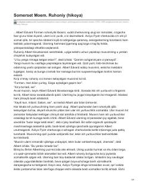

RSavodsiz bo'lsa-da, o'z kasbini sevgan ruhoniyning hayotiy sinovlari haqidagi hikoya.
Hikoyada Avliyo Pyotr cherkovida uzoq yillar xizmat qilgan, biroq o'qish va yozishni bilmaydigan ruhoniy Albert Edvard Formenning taqdiri tasvirlanadi. Yangi tayinlangan muovin unga savod chiqarishni shart qilib qo'ygach, ruhoniy o'z qadr-qimmatini saqlab qolish va hayotini qayta qurish uchun qiyin tanlov oldida qoladi.